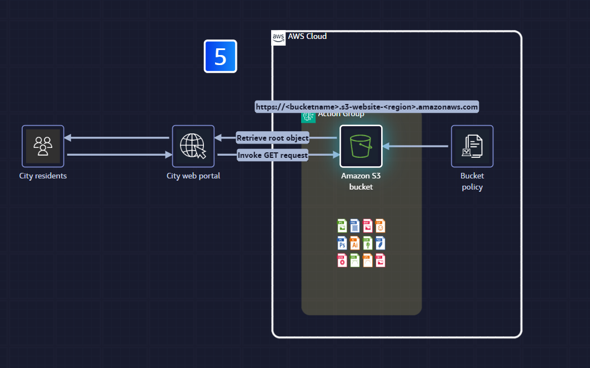

Wave website
Problem
- Jack Mayers cities data centre powers most of the city's technical infrastructure, but takes months to get and set up new resources
- One example is that the residents that use the city's web portal to check wave condtions at the beach: Surfers looks for big waves, while familles check for calmer conditions to stay safe, but the servers that deliver wave forecasts keep breaking down, they can't seem to keep them running reliably.
Solution
- Move to AWS Cloud infrastructure, which is more reliable and scalable, and can handle the fluctuating demand of the city's web portal.
- The original website is static, so the website can be moved to Amazon S3 and is able to use its webhosting feature
- After we add your website files to S3 we can turn on the website hosting feature

Amazon S3 Buckets
- Amazon S3 provides storage and retrieval of any amount of data from anywhere on the web. Overview of AWS
- In Amazon S3, data is stored as objects (files and their associated metadata) within containers called buckets.
- This solution uses an S3 bucket to host a static website, capable of handling unlimited traffic volumes cost-effectively, removing the need for traditional web server management.
- The S3 bucket stores both the HTML file and supporting assets (such as client-side scripts and style sheets) required for website functionality. Any S3 bucket can be enabled for static website hosting.
- When configured for website hosting, the S3 bucket receives a dedicated URL. Requests to this URL prompt Amazon S3 to serve the bucket's designated root object (typically the main HTML file).
- Access to the S3 bucket and its contents is controlled through permissions, which are defined in a bucket policy.
- A bucket policy, written in JSON format, specifies who can access the bucket and what operations they can perform.